정밀측정산업기사 (2020-06-06 기출문제)
1과목: 정밀계측
1. 다음 중 진원도의 평가방법과 가장 거리가 먼 것은?
- 최소 영역 기준원법
- 최소 외접 기준원법
- 최대 내접 기준원법
- 최대 제곱 기준원법
(정답률: 83%)

2. 피치가 2mm인 미터나사를 삼침법으로 측정할 때 가장 적합한 삼침 지름은 약 몇 mm인가?
- 1.114
- 1.155
- 1.176
- 1.901
(정답률: 63%)
3. 다음 중 구멍용 한계게이지가 아닌 것은?
- 스냅 게이지
- 봉 게이지
- 원통형 플러그 게이지
- 판 플러그 게이지
(정답률: 69%)
4. 마이크로미터 스핀들의 피치가 0.5mm이고 딤블의 원주를 50등분 하였다면 최소 측정값은?
- 0.04mm
- 0.03mm
- 0.02mm
- 0.01mm
(정답률: 78%)
5. 축정의 오차와 관련하여 정확도와 정밀도가 중요하게 고려되어야 하는데, 여기서 정확도를 가장 옳게 설명한 것은?
- 정확도는 참값에 비해 한쪽으로 치우침이 작은 정도를 의미하며 주로 계통적 오차에 의해 발생한다.
- 정확도는 참값에 비해 한쪽으로 치우침이 작은 정도를 의미하며 주로 우연적 오차에 의해 발생한다.
- 정확도는 측정값의 흩어짐이 작은 정도를 의미하며 주로 계통적 오차에 의해 발생한다.
- 정확도는 측정값의 흩어짐이 작은 정도를 의미하며 주로 우연적 오차에 의해 발생한다.
(정답률: 70%)
6. 지름 20mm, 길이 1m인 연강봉의 길이 측정시 0.3μm 만큼 압축되었다면, 이 때 측정력은 약 몇 N인가? (단, 연강의 탄성계수는 2.⑤8×105N/mm2이다.)
- 1.94
- 7.76
- 19.4
- 77.6
(정답률: 49%)
7. 한계게이지에 대한 설명으로 틀린 것은?
- 조작이 간단하므로 경험이 필요치 않다.
- 분업 방식을 취할 수 있다.
- 공작물의 정확한 치수를 알 수 있다.
- 대량 검사에 적합하다.
(정답률: 69%)
8. 그림과 같이 지름이 d인 두 개의 강구를 사용한 원통의 안지름(D)의 측정과 관련된 관계식으로 틀린 것은?
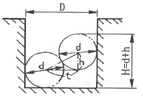
- D=d+t
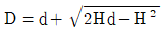
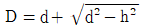
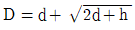
(정답률: 63%)
9. 롤러의 중심거리 80mm의 사인바를 사용하여 18°의 각도를 만들 때 정반 위의 두 롤러에 삽입하는 게이지 블록의 높이차는?
- 24.721mm
- 17.727mm
- 15.157mm
- 8.889mm
(정답률: 59%)
10. 석 정반의 장점이 아닌 것은?
- 수명이 길다.
- 전기의 전도체이다.
- 돌기가 생기지 않는다.
- 경년 변화가 거의 없다.
(정답률: 84%)
11. 공기 마이크로미터에 관한 설명으로 틀린 것은?
- 배율이 높고 정도가 좋다.
- 응답시간이 통상 0.0⑤초 이하로 빠른 속도로 측정이 가능하다.
- 비교 측정기로써 큰 치수와 작은 치수 2개의 마스터가 필요하다.
- 유량식일 경우 확대기구에 기계적 요소가 없기 때문에 고장이 거의 없다.
(정답률: 66%)
12. 밑면의 길이가 200mm인 1종 수준기(0.02mm/m)에서 기포관의 눈금이 2개 이동하였다면, 이 경사의 1m에 대한 편위량은 몇 mm인가?
- 0.01
- 0.02
- 0.04
- 0.08
(정답률: 54%)
13. 산술평균 거칠기 측정 시 기준길이가 0.8mm일 때, 설정되는 평가길이는?
- 0.4mm
- 1.25mm
- 4.0mm
- 12.5mm
(정답률: 62%)
14. 버니어 캘러퍼스에서 1눈금 간격기 1.0mm인 어미자 49mm를 50등분하여 아들자를 만들었다면 이 버니어 캘러퍼스의 최소 읽음 값은?
- 0.01mm
- 0.02mm
- 0.⑤mm
- 0.10mm
(정답률: 68%)
15. 다음 중 길이, 각도, 형상 및 윤곽 등을 정밀하게 측정하기에 가장 적합한 측정기는?
- 외측 마이크로미터
- 옵티컬 플랫
- 리니어 게이지
- 공구 현미경
(정답률: 74%)
16. 다음 중 나사산의 각도를 측정하는 방법이 아닌 것은?
- 투영기에 의한 방법
- 공구 현미경에 의한 방법
- 버니어 캘리퍼스에 의한 방법
- 만능 측정 현미경에 의한 방법
(정답률: 80%)
17. 3차원 측정기에서 원의 진원도 측정 시 요구되는 최소 측정점의 수는?
- 2점
- 4점
- 6점
- 8점
(정답률: 82%)
18. 광선정반을 이용하여 게이지 블록의 평면도를 측정할 때, 간섭무늬의 굽음량과 간섭무늬의 중심간격(피치)의 비가 1:5이고 사용한 빛의 파장이 0.64μm이라면 평면도는 몇 μm인가?
- 0.064
- 0.128
- 1.2
- 2.4
(정답률: 64%)
19. 20℃에서 106mm인 게이지 블록이 있다. 이 게이지 블록의 온도가 26℃로 높아지면 치수는 약 몇mm가 되는가? (단, 게이지 블록의 선팽창계수는 11.6×10-6/℃이다.)
- 106.012
- 106.073
- 106.007
- 106.001
(정답률: 52%)
20. 다음 중 마이크로미터 측정면(앤빌 또는 스핀들)의 평면도를 측정하기 가장 적합한 것은?
- 옵티컬 플랫
- 게이지 블록
- 다이얼 게이지
- 정반
(정답률: 75%)
2과목: 재료시험법
21. 에릭센 시험은 재료의 어느 성질을 확인하기 위한 실험인가?
- 봉재의 연신율을 측정하는 시험이다.
- 판재의 연성을 측정하는 시험이다.
- 탄소강의 파단을 측정하는 시험이다.
- 봉재의 전단성을 측정하는 시험이다.
(정답률: 66%)
22. 원추형의 다이아몬드 선단을 갖는 압입자로 긋기 흠집의 폭으로 경도를 측정하는 시험은?
- 모스 경도시험
- 로크웰 경도시험
- 에코팁 경도시험
- 마르텐스 경도시험
(정답률: 46%)
23. 구리 합금의 비커스경도 시험에서 경도를 측정할 때, 2개의 인접한 압입 자국의 중심 사이의 거리는? (단, KS를 기준으로 한다.)
- 압입 자국의 평균 대각선 길이의 적어도 3배 이상
- 압입 자국의 평균 대각선 길이의 적어도 6배 이상
- 압입 자국의 평균 대각선 길이의 적어도 12배 이상
- 압입 자국의 평균 대각선 길이의 적어도 18배 이상
(정답률: 62%)
24. 마모시험에서 마모량의 측정방법 중 간접적인 방법은?
- 마모계수로 구하는 방법
- 마모에 의해 손실된 재료의 부피로 구하는 방법
- 시편의 질량변화로 구하는 방법
- 시편의 형태변화로 구하는 방법
(정답률: 69%)
25. 자분탐상검사에서 의사지시모양이 아닌 것은?
- 전류 지시
- 전극 지시
- 자기 펜 자국
- 균열에 의한 자분 모양
(정답률: 56%)
26. 브리넬 경도를 산출하는 계산식으로 틀린 것은?
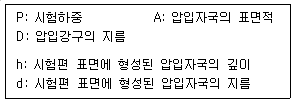
- 브리넬 경도 =P/A
- 브리넬 경도 =
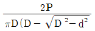
- 브리넬 경도 =
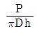
- 브리넬 경도 =
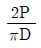
(정답률: 64%)
27. 인장시험에서 연신율(ε)을 구하는 식으로 옳은 것은? (단, L0:거리, L1:인장시험 후 연신된 표점거리)
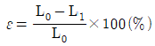
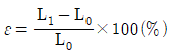
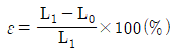
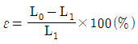
(정답률: 64%)
28. 피로시험에 있어서 시간에 따라 반복적인 응력을 가하는 형태가 그림과 같은 경우의 응력의 종류는?
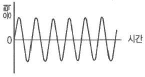
- 완전 양진 응력
- 부분 양진 응력
- 편진 응력
- 부분 편진 응력
(정답률: 74%)
29. 지름이 20mm, 높이가 30mm인 원통형의 시험편을 하중 65kN으로 압축시험 하였을 때, 공칭응력은 약 몇 MPa인가?
- 207
- 20.7
- 92
- 9.2
(정답률: 47%)
30. 마모시험에서 마모접촉방식에 따른 적용방법으로 틀린 것은?
- 기어에는 회전 마모가 적용된다.
- 레일과 차륜에는 회전 마모가 적용된다.
- 브레이크에는 미끄럼 마모가 적용된다.
- 피스톤과 실린더에는 회전 마모가 적용된다.
(정답률: 78%)
31. 충격 시험을 하는 목적은 다음 중 무엇을 알기 위한 것인가?
- 연신율
- 항복강도
- 경도와 강도
- 인성과 취성
(정답률: 72%)
32. 다음 중 만능 재료 시험기를 사용하여 할 수 있는 시험과 가장 거리가 먼 것은?
- 인장시험
- 압축시험
- 굽힘시험
- 부식시험
(정답률: 76%)
33. 크리프 시험에서 재료의 가공경화와 회복연화가 서로 균형을 이루어서 일정 한 변형속도가 유지되는 구간은?
- 초기 변형 단계
- 정상 크리프 단계
- 천이 크리프 단계
- 가속 크리프 단계
(정답률: 76%)
34. 샤르피 충격시험기는 어떤 에너지를 이용하여 충격시험을 하는 것인가?
- 위치 에너지
- 열 에너지
- 마찰 에너지
- 전기 에너지
(정답률: 71%)
35. 재료시험 중 시편의 양단을 충격 없이 서서히 잡아당겨 파단시험을 하는 시험은?
- 피로시험
- 인장시험
- 마모시험
- 비틀림시험
(정답률: 73%)
36. 주파수가 20MHz인 탐촉자를 가지고 납을 검사할 때, 초음파 에너지의 파장(λ)은? (단, 납에서의 음속은 2.1×105㎝/sec이다.)
- 0.01⑤cm
- 95.24cm
- 0.035mm
- 0.0272mm
(정답률: 41%)
37. KS에서 크리프 시험 시 가열 장치는 시험편을 규정된 온도까지 가열할 수 있어야 하는데, 규정된 온도와 측정온도 사이의 온도차는 몇도(℃)까지 허용하는가? (단, 규정온도 900℃ 이하 기준이며, 측정온도는 시험편 평행부 표면에서 측정한 온도이다.)
- ±1℃
- ±2℃
- ±3℃
- ±4℃
(정답률: 58%)
38. 리벳, 핀 등 채결부의 면에 평행하게 작용하는 힘과 관련된 시험법으로 가장 적절한 것은?
- 굽힘시험
- 인장시험
- 전단시험
- 비틀림시험
(정답률: 66%)
39. 방사선 투과검사에서 투과사진의 질이나 감도를 결정하기 위해 사용하는 것은?
- 투과 필름 농도
- 큐리
- 탐촉자
- 투과도계
(정답률: 69%)
40. 로크웰 경도시험에서 시험편에 관한 설명으로 틀린 것은?
- 제품이나 재료 규격에서 달리 규정하지 않는 한 시험은 표면이 편평해야 한다.
- 산화물이나 이물질, 특히 윤활제가 완전히 제거된 시험면에서 해야 한다.
- 시험편 준비과정에서 열이나 냉간가공에 의한 표면경도의 변화가 되도록 생기지 않도록 해야 하며, 누르개 자국의 깊이가 깊을수록 이 영향이 커지므로 특히 주의해야 한다.
- 시험편의 최소 두께는 원추형 누르개로 시험할 경우는 누르개 자국깊이의 10배이상, 구형 누르개로 시험할 경우는 15배 이상이 되어야 한다.
(정답률: 62%)
3과목: 도면해독
41. 그림과 같은 도면에서 (1)에 적용하는데 가장 적합한 기하공차는?
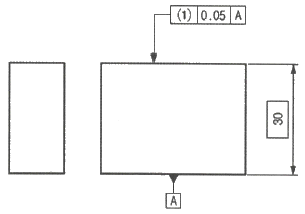
- 경사도
- 흔들림
- 면의 윤곽도
- 평면도
(정답률: 65%)
42. 다음의 치수공차와 끼워 맞춤 용어에 대한 설명으로 틀린 것은?
- 실치수는 부품을 실제로 측정한 치수이다.
- 내측 형체는 대상물의 내측을 형성하는 형체이다.
- 구멍은 주로 원통형의 내측 형체를 말하지만, 원형 단면이 아닌 외측 형체도 포함한다.
- 허용 한계치수는 형체의 실치수가 그 사이에 들어가도록 정한 대,소 2개의 극한치수이다.
(정답률: 61%)
43. 도면이 구비하여야 할 기본 요건 중 틀린 것은?
- 대상물의 도형과 함께 필요로 하는 크기, 모양, 자세, 위치의 정보를 포함한다.
- 필요에 따라 면의 표면, 재료, 가공방법 등의 정보를 포함한다.
- 기술 교류의 입장에서 국내성을 가져야 한다.
- 가능한 한 넓은 분야에 걸쳐 정합성, 보편성을 가져야 한다.
(정답률: 73%)
44. 그림과 같이 흔들림 공차에 대한 규제가
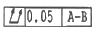
와 같이 표기 되었을 때 이를 가장 잘 해석한 것은?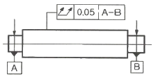
- 데이텀 형체인 A나 B 중 어느 하나의 데이텀을 기준으로 하여 온 흔들림이 규제된 것이다.
- 실제의 표면은 지정된 공차값의 반지름 차이로 그 축선이 공통 데이텀 축 직선 A-B에 일치하는 동축의 두 개 원통사이에 있어야 한다.
- 실제의 표면은 지정된 공차값의 반지름 차이로 그 축선이 공통 데이텀 축 직선 A-B에 일치하는 동축의 두 개 평면사이에 있어야 한다.
- 데이텀은 데이텀 표시가 있는 원통의 아랫면 모선을 기준으로 한다.
(정답률: 64%)
45. 치수선에 대한 설명으로 틀린 것은?
- 치수를 기입하기 위하여 외형선에서 2~3mm 연장하여 그은 선이다.
- 지시하는 길이 또는 각도를 측정하는 방향에 평행하게 긋는다.
- 가는 실선을 사용한다.
- 치수 기입에 사용되는 선으로 치수보조선과 함께 쓰인다.
(정답률: 66%)
46. 기하공차에서 데이텀 지시 없이 단독으로 규제 가능한 공차의 명칭은?
- 동축도
- 흔들림
- 평면도
- 직각도
(정답률: 65%)
47. 다음 그림에서 기하공차에 대한 내용으로 가장 적합한 것은?
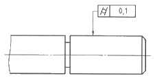
- 대상으로 하고 있는 표면은 0.1mm만큼 떨어진 두 개의 동축 원통면 사이에 있어야 한다.
- 대상으로 하고 있는 표면은 동일 평면위에서 0.1mm 만큼 떨어진 두 개의 동심원 사이에 있어야 한다.
- 지시된 부분의 모선은 0.2mm만큼 떨어진 3개의 평행한 직선의 사이에 있어야 한다.
- 지시된 원통 부분의 축선은 ⌀0.1mm원 안에 있어야 한다.
(정답률: 58%)
48. 아래의 최대 실체 공차방식이 적용되는 기하공차의 최대 허용 값은?
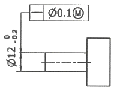
- 0.0
- 0.1
- 0.2
- 0.3
(정답률: 47%)
49. 다음 끼워맞춤의 종류 중 억지 끼워맞춤에 속하는 것은?
- H7/f6
- H7/p6
- H7/g6
- H7/h6
(정답률: 68%)
50. 동축도 또는 동심도 공차는 기하공차 종류 중 어디에 속하는가? (단, KS, ISO 기준)
- 위치 공차
- 자세 공차
- 형상 공차
- 흔들림 공차
(정답률: 66%)
51. 그림과 같이 표시된 기하공차 기호를 바르게 설명한 것은?
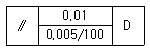
- 지정길이 100mm에 대하여 0.0⑤mm, 전체길이에 대하여 0.01mm의 윤곽도 공차
- 지정길이 100mm에 대하여 0.0⑤mm, 전체길이에 대하여 0.01mm의 평행도 공차
- 지정길이 100mm에 대하여 0.0⑤mm, 전체길이에 대하여 0.01mm의 대칭도 공차
- 지정길이 100mm에 대하여 0.0⑤mm, 전체길이에 대하여 0.01mm의 직각도 공차
(정답률: 75%)
52. 치수 기입방법에 대한 설명으로 틀린 것은?
- 형체를 가장 분명하게 나타낼 수 있는 투상도 또는 단면도에 위치하는 것이 좋다.
- 치수는 한 가지 치수 단위만을 사용하여 표시하여야 한다.
- 한쪽 방향으로만 치수를 제한하기 위해서는 ‘min’ 또는 ‘max’를 치수 값에 기입할 수 있다.
- 치수공차 값의 하나가 0일때에는 0의 값은 생략하고 기입 할 수 있다.
(정답률: 65%)
53. 구멍의 치수가
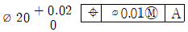
로 규제되어 있을 때, 이 구멍의 최대실체실효치수(maximum material virtual size)는 얼마인가?- 19.99
- 20.00
- 20.01
- 20.03
(정답률: 48%)
54. 이론상 정확한 치수(TED)의 정의로 틀린 것은?
- 이론상 정확한 치수는 치수 또는 각도일 수 있다.
- 개별 공차나 일반 공차에 의해 영향을 받지 않는다.
- 이론상 정확한 치수는 그 값을 포함한 직사각형 틀로 표시 한다.
- 치수 앞, 뒤에 괄호 기호를 사용하여 표기하여야 한다.
(정답률: 66%)
55. 다음 중 기하공차를 나타내는데 있이서 옳지 않은 것은?
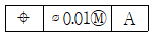
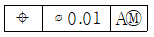
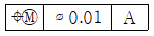
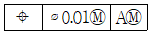
(정답률: 76%)
56. 축의 치수가
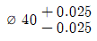
일 때 치수공차로 옳은 것은?- 0.025
- 0.020
- 0.⑤0
- 0.0⑤
(정답률: 76%)
57. 그림과 같이 경사면부가 있는 대상물에서 그 경사면의 실형을 나타내는 투상도의 명칭으로 옳은 것은?
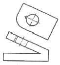
- 정 투상도
- 보조 투상도
- 부분 확대도
- 국부 투상도
(정답률: 69%)
58. 데이텀과 관련한 용어 중 데이텀을 설정하기 위해서 가공, 측정 및 검사용의 장치, 기구 등에 접촉시키는 대상물 위의 점, 선, 또는 한정된 영역을 의미하는 것은?
- 데이텀 시스템
- 데이텀 표적
- 데이텀 형체
- 데이텀 영역
(정답률: 64%)
59. 다음의 도면에서 치수를 표시하는 숫자 아래 그어진 굵은 실선은 무엇을 의미하는가?
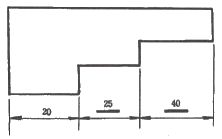
- 실척
- 축척
- 척도에 비례함
- 척도에 비례하지 않음
(정답률: 65%)
60. 도면에 사용하는 기호의 일반적인 설명으로 틀린 것은?
- 작성 편의를 위해 그림기호를 사용할 수 있다.
- 작성 편의를 위해 문자 기호를 사용할 수 있다.
- 한국산업표준에서 규정한 기호를 나타내는 경우 일반적으로 특별한 주기는 필요하지 않다.
- 한국산업표준 이외의 표준에 공지된 기호는 사용할 수 없다.
(정답률: 59%)
4과목: 정밀가공학
61. 절삭된 기어의 치형과 피치의 오차를 수정하는 기어 다듬질 가공이 아닌 것은?
- 기어 폴리싱
- 기어 셰이빙
- 기어 버니싱
- 기어 연삭
(정답률: 46%)
62. 초음파 가공의 장점으로 옳은 것은?
- 연질재료인 경우 가공이 쉽고 가공속도가 빠르다.
- 가공능률은 가공압력에 영향을 받지 않는다.
- 취성이 큰 유리, 세라믹 등의 가공에 효율적이다.
- 가공할 수 있는 면적이나 가공 깊이에 제한이 없다.
(정답률: 60%)
63. 초경 공구, 세라믹 공구 등에 발상하기 쉽고 충격적인 힘을 받을 때 많이 발생하는 공구파손을 무엇이라 하는가?
- 크레이터 마모
- 플랭크 마모
- 치핑
- 구성인선
(정답률: 57%)
64. 배럴 다듬질의 특징이 아닌 것은?
- 작업이 간단하고 숙련이 필요 없다.
- 공작물의 미세연마에 이용된다.
- 가공한 공작물의 기계적 성질이 향상된다.
- 공작물의 전면을 동시 가공할 수 있다.
(정답률: 38%)
65. 브로칭머신에 대한 설명으로 틀린 것은?
- 제품의 형상과 크기에 따라 브로치를 각각 제작해야한다.
- 브로치의 제작에 비용이 많이 소요되므로 소량생산에 적합하다.
- 내경과 외경을 모두 가공 할 수 있다.
- 키 흠, 스플라인 흠, 다각형 구멍 등의 가공에 적합하다.
(정답률: 65%)
66. 선반에서 지름 100mm인 가공물을 120rpm으로 회전시켜 가공할 때, 절삭속도는 약 몇 m/min인가?
- 13.0
- 18.8
- 26.0
- 37.7
(정답률: 58%)
67. 밀링머신에서 지름 60mm의 환봉에 리드가 280mm인 나선 홈을 절삭할 경우 나선각θ는 약 얼마인가?
- 12°51′
- 18°36′
- 33°57′
- 42°82′
(정답률: 47%)
68. 절삭조건에 관련된 설명으로 틀린 것은?
- 절삭속도는 단위시간 당 가공물이 인선을 통과하는 거리로 표시한다.
- 밀링의 이송량은 가공물 1회전 당 공구가 축방향으로 이동한 거리로 나타낸다.
- 3가지 중요한 절삭조건은 절삭속도, 이송, 절삭깊이이다.
- 절삭깊이는 가공물의 표면에서 가공면까지의 직선거리를 말한다.
(정답률: 42%)
69. 밀링작업에서 하향절삭의 특징은?
- 가공면이 깨끗하다.
- 커터의 수명이 짧다.
- 칩이 잘 빠져나와 절삭을 방해하지 않는다.
- 동력소비가 크다.
(정답률: 53%)
70. 비교적 작은 압력으로 특수 숫돌이 가공물의 표면을 가압하고 숫돌을 진동시키면서 가공물에 회전 이송운동을 주어 가공물의 표면을 정밀 가공하는 방법은?
- 드릴 가공
- 선반 가공
- 밀링 가공
- 슈퍼 피니싱
(정답률: 68%)
71. 연삭 작업 시 인장 강도가 작은 재료나 구리합금, 경합금, 비철금속 등을 가공하기에 적합한 숫돌입자는?
- A
- C
- WA
- GC
(정답률: 50%)
72. 연삭숫돌의 결합제 중 열경화성의 합성수지인 베크나이트가 주성분으로 강인하고 탄성이 커서 절단용 숫돌에 사용되는 결합제는?
- 셀락 결합제
- 레지노이드 결합제
- 비트리파이드 결합제
- 실리케이트 결합제
(정답률: 49%)
73. 수평밀링머신의 부속작이 중 밀링커터를 고정하는 것은?
- 아버
- 컬럼
- 새들
- 니
(정답률: 59%)
74. 절삭공구 수명의 일반적인 판정기준으로 옳지 않은 것은?
- 완성치수의 변화량이 일정량에 달했을 때
- 가공면에 광택이 있는 밴드(band)가 생기면서 절삭이 불량할 때
- 절삭저항의 주분력, 배분력, 이송분력이 모두 미소량 감소할 때
- 공구 인선의 마모가 일정량에 달했을 때
(정답률: 59%)
75. 연삭액의 요구 조건으로 틀린 것은?
- 냉각송
- 유동성
- 윤활성
- 마모성
(정답률: 71%)
76. 직물, 피혁, 고무 등으로 만든 유연한 원판을 고속 회전시켜 일감의 표면을 매끈하고 광택있게 하기 위한 가공 방법은?
- 버핑
- 텀블링
- 숏 피닝
- 그릿 블라스트
(정답률: 55%)
77. 선반에서 심압대를 이용한 테이퍼 가공 시 아래와 같이 주어졌을 때, 편위량은 몇 mm인가?
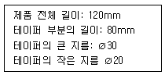
- 5.5
- 6.5
- 7.5
- 8.5
(정답률: 48%)
78. 슈퍼 피니싱을 이용한 경강 가공 시 적용압력은 몇 N/cm2이하가 가장 적합한가?
- 7.8
- 37
- 64
- 112
(정답률: 44%)
79. 드릴의 일반적인 특징에 대한 설명으로 틀린 것은?
- 선단 각은 118°를 표준으로 하지만, 공작물 재질에 따라 선단각이 다르다.
- 몸체 여유는 자루쪽으로 갈수록 드릴 외경이 약간 작아진다.
- 자루부는 13mm이하는 곧은 자루, 13mm이상은 모스 테이퍼 자루이다.
- 경사각은 중심부에서 최대이고 외주부로 갈수록 작아진다.
(정답률: 46%)
80. 주분력 절삭저항이 1kN, 절삭속도 120m/min로 선반작업이 이루어질 때, 소요되는 절삭동력은 약 몇 kW인가? (단, 기계적 효율은 0.75이다.)
- 1.50
- 2.00
- 2.67
- 3.45
(정답률: 45%)